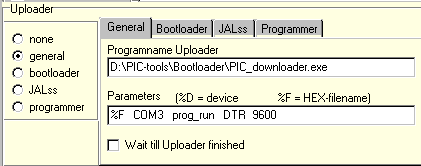

Uploader/Programmer Examples
Everyone who has good working settings for some uploader device, not yet in this document, is invited to send them to me, so they can be incorporated in this document.
PIC_USB_downloader (Dx2xx drivers)
Submitted by Stef Mientki
Start parameters
bootloader.exe <filename> [program/prog_run/prog_rs232] <resetpin> <baudrate>
example bootloader D:\JAL\test.hex COM3 DTR 115200
PIC_downloader (VCP drivers) V2.0 and up
Submitted by Stef Mientki
Start parameters
bootloader.exe <filename> - [program/prog_run/prog_rs232] - <baudrate>
(Parameter 6, not shown, is the handle of the master program)
example
bootloader D:\JAL\test.hex - prog_run 115200
Note that the second and fourth parameter are not used for this bootloader, and therefor must be a minus-sign (or some other word). The third command parameter is fixed at "prog_run", maybe in the future other commands will be implemented.

In the above picture, the first parameter (%F) is substituted by the filename (with fully qualified path) of the hex-file, generated by the compiler. The second and fourth parameter (COM3, DTR) doesn't have any meaning for this uploader (these parameters are fetched from the inifile). The third parameter PROG_RUN, tells the uploader to program the PIC, reset and run it. The fifth parameter specifies which baudrate the uploader should use for serial debugging.
PIC_downloader (VCP drivers) upto V1.09
Submitted by Stef Mientki
Start parameters
bootloader.exe <filename> <commport> <resetpin> <baudrate>
example bootloader D:\JAL\test.hex COM3 DTR 115200
USB programmer
Submitted by Stef Mientki
...
Wisp
??
XWisp
??
If you've problems running the programmer from JALcc, check the JALcc.ini file (after closing JALcc), to see what commands where send to the programmer. Here is an example of that part of the inifile voor XWISP, as shown in the picture on the right
[Programmer Commands]
application=c:\python22\python
parameters=c:\xwisp\xwisp.py go c:\pic-ontwikkeling\projecten\knipper18f242\b452-1.hex
defaultdir=c:\python22
USB_message=0